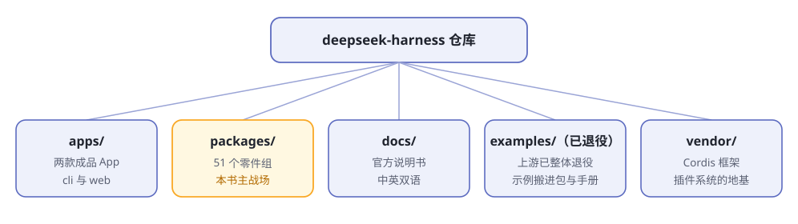

第3章 俯瞰地图¶
阅读提示 车已经开起来了，这一章打开引擎盖看全景：仓库里有哪些零件、各管什么、后面的章节分别拆哪一块。不要求记住，混个脸熟即可。
仓库的五个大区¶
dsh 的仓库是一个 monorepo（一个大仓库装下所有零件）。从天上往下看是五个区（图3-1）：

图3-1 仓库五大区
| 区 | 一句话 |
|---|---|
apps/ |
用户实际运行的两个入口：命令行和网页 |
packages/ |
全部能力零件，按"组"分文件夹 |
docs/ |
官方文档，含 20 多篇子系统说明和 cordis 七课教程 |
examples/ |
官方示例：无头 agent、ACP 服务器、定时提醒等 |
vendor/ |
外购的地基框架 Cordis，"一切皆插件"就靠它 |
五十个零件，按器官归堆¶
packages/ 里 50 来个包，名字都像缩写，第一次看会懵。别慌——按第 1 章的五器官归堆，立刻清楚（表3-1）：
表3-1 零件按器官归类
| 器官 | 零件组 | 管什么 |
|---|---|---|
| 🔌 接大脑 | llm/ credentials/ |
模型适配器、API key 管理 |
| 🧠 记忆与循环 | core/ session/ session-query/ context/ compaction/ spill/ |
会话日志、提示词组装、上下文压缩 |
| 🤚 手 | shell/ subprocess/ terminal/ code-runtime/ fs/ |
执行命令、读写文件、跑代码 |
| 📏 规矩 | sandbox/ interaction/ guard/ |
沙箱、审批、防呆守卫 |
| 🎯 目标 | goal/ plan/ todo/ schedule/ jobs/ workflow/ subagent/ |
目标跟踪、计划、后台任务、子代理 |
| 👁️ 外设 | web/ lsp/ skill/ mcp/ attachment/ |
联网搜索、语言服务、技能、外部工具协议 |
| 🚪 门面 | api/ sdk/ acp/ host/ client/ hooks/ |
对外接口、网页界面、与其他工具互通 |
| 🧱 车架 | boot/ bundle/ preset/ extensions/ settings/ storage/ workspace/ identity/ |
启动、配方、设置、存储 |
不用背。后面每拆一个器官，对应的零件会再出场一次。
主干上的五件套¶
所有零件里，core/ 是主干——每辆车出厂都装着它。里面有五件套（表3-2）：
表3-2 core 五件套
| 零件 | 大白话职责 |
|---|---|
| session | 会议纪要员：逐笔记录发生过的每件事 |
| system-prompt | 开场白编写员：把提示词片段和工具清单拼成给大脑的开场白 |
| tools | 工具管理员：登记有哪些工具，执行前先过一遍关卡 |
| agent | 前台：所有插件找 agent 办事，都通过这个接待口 |
| agent-loop | 司机：真正执行"想一步→干一步→看结果"循环的人 |
官方有个关键设计：司机是可以换的。其他插件都只认识前台（agent），不认识具体哪个司机（agent-loop）在开车——所以换一个司机，全车不受影响。这个"只认接口、不认实现"的思路贯穿全书。
怎么逛这个仓库¶
官方给的两条建议（来自架构文档）：
- 动
packages/之前，先读架构文档 - 用 agent 探索代码库——让 dsh 自己读自己，是官方推荐用法
零件的说明书就在每个零件自己的目录里：packages/<组>/<包>/README.md，用途、接口、扩展点都写清了。
全书章节对照地图¶
本书后面每一章拆哪块零件，先给你地图（表3-3）：
表3-3 章节 × 零件对照
| 章 | 主题 | 主要零件 |
|---|---|---|
| 第4章 | 一切皆插件 | vendor/cordis |
| 第5章 | 一次对话的旅程 | core/ session/ |
| 第6章 | 工具执行流水线 | tools interaction/ guard/ |
| 第7章 | 目标与计划 | goal/ plan/ todo/ |
| 第8章 | 上下文工程 | compaction/ spill/ context/ |
| 第9章 | 安全的手脚 | fs/ subprocess/ shell/ terminal/ sandbox/ |
| 第10章 | 连接外部世界 | mcp/ lsp/ skill/ subagent/ |
| 第11章 | 第一个插件 | examples/ + 官方 cookbook |
| 第12章 | 组装自己的 agent | boot/ bundle/ preset/ |
🧪 本章实验¶
实验 3-1 ★｜数一数零件 目标：对规模有体感。 步骤：打开仓库网页版的 packages 目录，数数有多少个文件夹。 验收：数出 50 个上下，且能指着其中 3 个说出它归哪个器官。
实验 3-2 ★★｜让 dsh 介绍它自己 目标：体验"用 agent 探索代码库"的官方用法。 步骤：把 deepseek-harness 仓库 clone 到本地，选为工作区，问它：「介绍一下 packages/core 下的各个包分别负责什么」。 验收：它基于真实源码给出了介绍——这就是"自己读自己"。
🤔 思考题¶
- ★ 为什么"其他插件只认前台、不认司机"是个好设计？想想如果反过来会怎样。
- ★★ 表3-1 里哪个器官的零件最让你意外？为什么？
📝 小结¶
- 五大区——apps、packages、docs、examples、vendor
- 零件按器官归堆——接大脑/记忆循环/手/规矩/目标/外设/门面/车架，共 50 个左右
- core 五件套——session、system-prompt、tools、agent、agent-loop；司机可换是核心设计
- 逛法——先读架构文档，让 agent 带你逛，零件说明书在各自 README
第一部分到此结束：你见过了它、跑起来了它、看全了它。 下一部分开始解剖。➡️ 第4章 一切皆插件